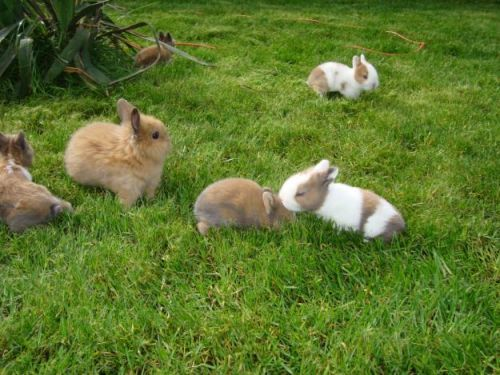
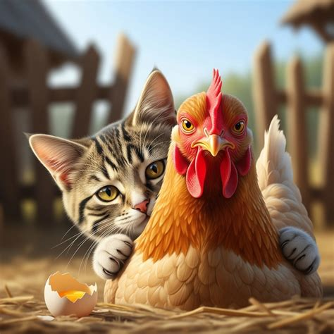
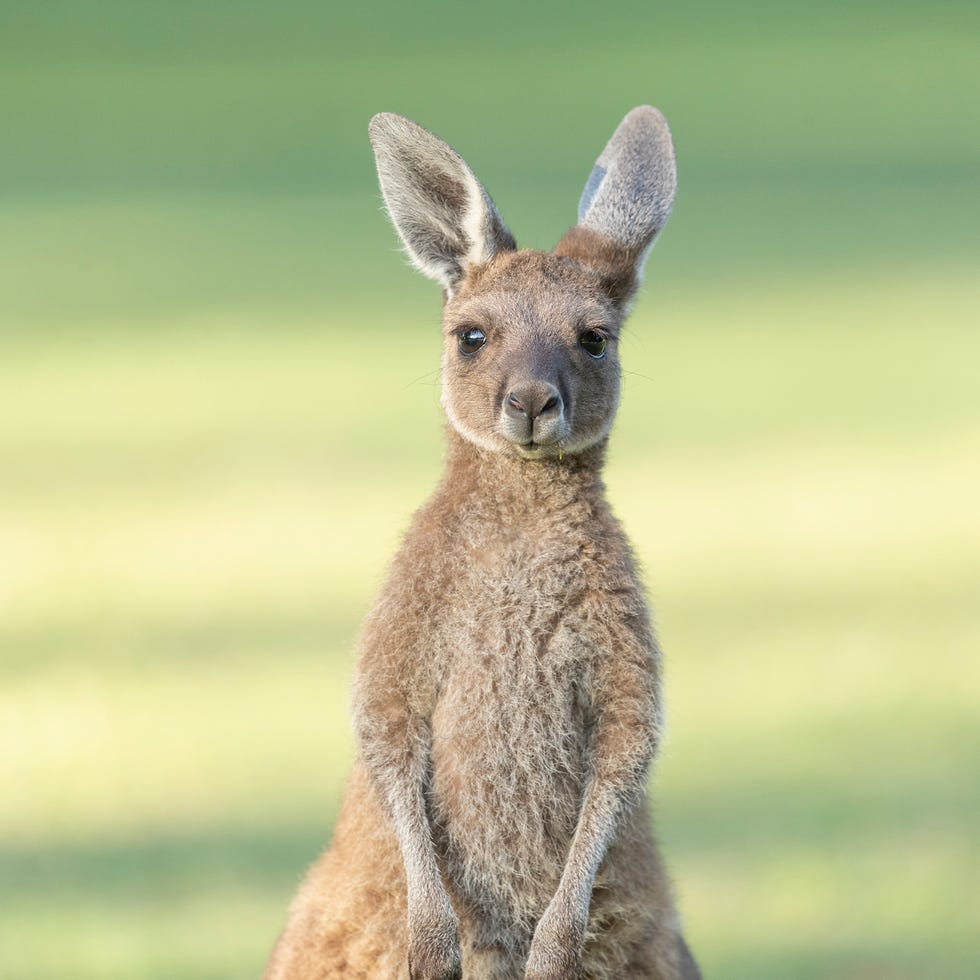
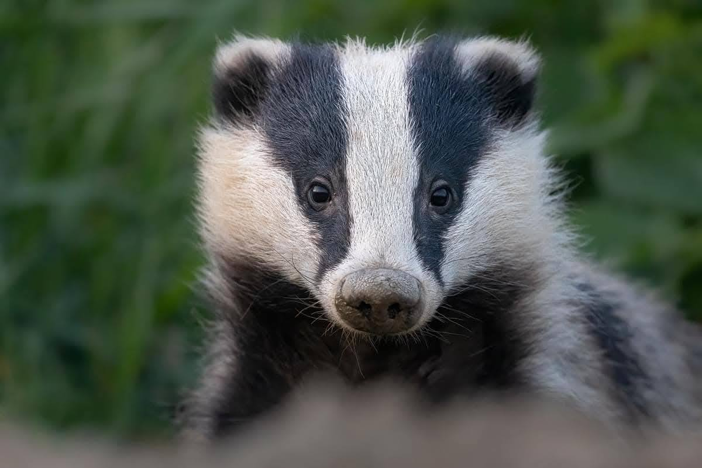

Țipă vuturul tău la tine de foame? Ai impresia că se uită cu prea multă poftă către gâtul tău? AM EU SOLUȚIA! Cresc animale mici: iepuri, șoareci de câmp, găini, șerpi, pentru vulturul tău flămând. Se livrează vii la orice oră, hrănitoare, fără hormoni de creștere, acestea asigură nutriția optimă pentru vulturul tău.
CONTACTEAZĂ-MĂCu ce poți să îți îndopi vulturul?

Iepuri de câmp.
O sursă consacrată de proteină pentru vulturul tău. Dacă nu îi dai iepure din când în când nu îl iubești.


Pui de cangur
Vulturul tău nu a trăit până când nu a sfâșiat un pui de cangur. Știai că în Australia sunt mai mulți canguri decât oameni? Nu pentru mult timp, dacă alegeți puii noștii de cangur suculenți.
